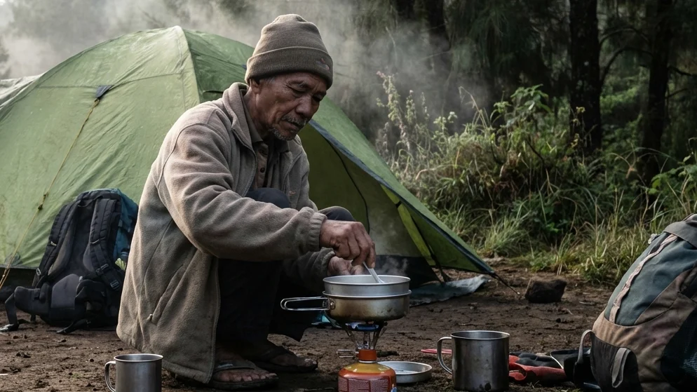

1. Kebutuhan Kembali ke Alam di Era Perkotaan Modern
Di era digital yang menuntut mobilitas dan kecepatan tinggi, manusia semakin sering terjebak dalam kotak-kotak beton perkotaan. Rutinitas yang monoton, kemacetan jalanan, serta radiasi layar gawai (gadget) tanpa henti perlahan namun pasti mulai mengikis kesehatan mental masyarakat urban. Sebagai antitesis dari fenomena tersebut, kerinduan naluriah untuk kembali membumi dan menyatu dengan alam bebas (back to nature) kian memuncak. Alih-alih memilih menginap di hotel bintang lima yang menawarkan fasilitas buatan, banyak jiwa petualang yang justru secara sadar mencari cara untuk melepaskan diri dari segala bentuk kemewahan tersebut.
Bila Anda adalah salah satu individu yang merindukan kesederhanaan, maka melakukan penelusuran mengenai Jelajah Alam Lewat Camping Malang: Sensasi Bermalam Otentik dengan Tenda Dome adalah keputusan yang amat sangat tepat. Wilayah dataran tinggi Malang Raya (khususnya Kota Batu) menyimpan berjuta pesona eksotis yang menanti untuk dijelajahi. Melalui panduan komprehensif ini, kita akan menyelami secara mendalam mengapa tenda dome klasik tetap menjadi primadona para pecinta alam, menelusuri persiapan teknis yang wajib dilakukan agar tubuh Anda tidak tersiksa oleh hawa dingin, hingga merekomendasikan destinasi perkemahan terbaik yang akan merestorasi kembali energi jiwa dan raga Anda.
2. Daya Tarik Utama Eksplorasi Tempat Camping di Malang Raya
Kawasan Malang dan Batu bukan sekadar destinasi liburan keluarga biasa yang dipenuhi oleh taman hiburan buatan. Secara geografis, wilayah ini adalah sebuah mahakarya alam yang dikelilingi oleh jajaran gunung berapi yang megah.
Kesejukan Udara Pegunungan yang Terjaga
Keunggulan absolut yang langsung akan menyapa paru-paru Anda saat tiba di kawasan wisata alam Malang adalah kualitas udaranya. Berada pada elevasi ketinggian rata-rata di atas 1.000 meter dari permukaan laut (MDPL), udara pegunungan ini terasa amat sejuk di siang hari dan akan berubah menjadi hawa beku yang menggigit saat malam tiba. Kualitas udara yang bersih, kaya akan oksigen murni, dan terbebas dari kepulan polusi emisi karbon adalah terapi penyembuhan (healing) alami yang amat didambakan oleh sistem pernapasan warga ibu kota.
Pemandangan Alam yang Menyejukkan Mata
Kontur tanah yang berbukit menyajikan variasi lanskap visual yang luar biasa kaya. Membuka pintu tenda di pagi hari, Anda akan disambut oleh deretan pohon pinus tropis yang menjulang tinggi, hamparan perbukitan hijau, hingga fenomena lautan kabut putih yang menyelimuti lembah di bawah Anda. Pada malam harinya, kegelapan alam liar tersebut akan diimbangi oleh jutaan kerlap-kerlip cahaya lampu kota (City Lights) yang memukau mata.
BACA JUGA (Edukasi Berkemah):
3. Mengapa Memilih Tenda Dome untuk Pengalaman Menyatu dengan Alam?
Di tengah gempuran tren tenda glamping raksasa berbahan kanvas atau bangunan kabin kayu mewah, tenda dome yang berbentuk setengah bola tetap menduduki tahta tertinggi di hati para pejalan alam sejati.
Kepraktisan dan Fleksibilitas Tinggi
Tenda dome menawarkan kemerdekaan ruang yang hakiki. Desainnya yang ringkas, ringan, dan mudah dilipat membuatnya sangat praktis untuk dibawa mendaki atau menjelajah area perkemahan yang jauh dari tempat parkir kendaraan. Mendirikan kerangka fiberglass atau alloy pada tenda ini juga memakan waktu yang sangat singkat. Keberadaan Anda di alam terasa lebih intim karena Anda hanya dibatasi oleh selembar kain tipis dari rerumputan yang basah oleh embun pegunungan.
Ketahanan Terhadap Cuaca Pegunungan Ekstrem
Bentuk melengkung aerodinamis dari tenda dome diciptakan secara cermat melalui hukum fisika untuk membelah dan mengalirkan hembusan angin badai dari segala arah tanpa memberikan perlawanan yang frontal. Agar petualangan Anda aman, Anda sangat diwajibkan menggunakan tenda dome bertipe Double Layer. Lapisan jaring bagian dalam (inner) memberikan sirkulasi udara (oksigen) yang lega, sementara lapisan payung luar (flysheet) yang berbahan Waterproof PU akan menahan secara penuh guyuran hujan lebat dan memastikan tidak ada uap napas yang berubah menjadi embun (kondensasi) menetes mengenai wajah Anda saat tidur.
4. Persiapan Krusial Sebelum Berangkat Jelajah Alam
Alam bebas tidak pernah berkompromi dengan kelalaian manusia. Kesalahan dalam menyiapkan logistik saat Anda memutuskan untuk tidur di dalam tenda dome bisa berakibat pada serangan hipotermia yang amat membahayakan keselamatan.
Pemilihan Pakaian dengan Sistem Layering
Suhu malam di kawasan Malang Raya bisa anjlok menyentuh angka 12 hingga 14 derajat Celcius (dikenal sebagai fenomena musim bediding). Tinggalkan celana bahan jeans tebal Anda di rumah! Anda wajib mengaplikasikan 3-Layering System. Lapisan pertama (base layer) harus terbuat dari bahan penyerap keringat seperti dry-fit. Lapisan kedua (mid layer) gunakanlah jaket fleece atau rajut polar untuk menahan panas tubuh. Lapisan pelindung terluar (outer layer) kenakanlah jaket parasut windbreaker atau hardshell anti-air untuk memblokir laju angin gunung yang menusuk.
Peralatan Tidur (Sleep System) yang Memadai
Jangan pernah membiarkan punggung telanjang Anda bersentuhan dengan lantai alas tenda, karena tanah akan menyedot hawa panas tubuh Anda secara konduksi dengan amat cepat. Gelarlah matras aluminium foil di dasar lantai untuk memantulkan radiasi dingin ke bawah, lalu tumpuk dengan matras spons atau kasur angin (air pad). Terakhir, bungkuslah tubuh Anda rapat-rapat menggunakan kantong tidur (sleeping bag) tipe mummy yang mengerucut dan berbahan bulu polar hangat di bagian dalamnya.
Logistik Dapur Lapangan (Nesting dan Kompor)
Karena Anda menolak kemewahan restoran, Anda harus siap menjadi koki di alam liar. Bawalah kompor gas portabel lipat yang menggunakan bahan bakar tabung gas kaleng (hi-cook). Jangan lupa menyertakan tameng pelindung angin (windshield) berbahan aluminium agar nyala api Anda tidak mudah padam. Gunakan panci bersusun (nesting) untuk menanak nasi, menggoreng telur, dan merebus air mineral. Menikmati seduhan minuman jahe merah panas di sepertiga malam adalah cara terbaik menaikkan suhu inti tubuh Anda.

Mempersiapkan sarapan secara mandiri di depan tenda menggunakan peralatan memasak sederhana (nesting) adalah kepuasan batin otentik yang tidak ternilai harganya bagi seorang petualang. (Ilustrasi: Unsplash)5. Rekomendasi Lokasi Camping Otentik di Batu Malang
Mencari lahan kemah yang menyuguhkan nuansa belantara namun masih berada dalam radar keamanan yang rasional adalah kunci dari liburan akhir pekan yang sukses di kota wisata ini.
Batu Sunrise Camp: Menyatukan Alam dan Kenyamanan Dasar
Destinasi perkemahan Batu Sunrise Camp seringkali muncul sebagai rekomendasi utama bagi para petualang maupun keluarga. Meskipun mereka menawarkan konsep Comfort Camping (menyediakan paket tenda sewa All-In yang sudah berdiri), tempat ini tetap menggunakan tenda tipe dome gunung konvensional sehingga nilai otentisitasnya tidak hilang. Anda bisa menyewa kavling tanah (ground) di bawah kerindangan pohon pinus tropis yang rapat. Keistimewaan mutlaknya adalah lahan ini menghadap ke timur, menyajikan panorama Golden Sunrise tanpa halangan, dan telah didukung oleh fasilitas keamanan krusial seperti blok toilet duduk yang sangat bersih serta ketersediaan tiang colokan listrik komunal.
Kawasan Hutan Pinus dan Sabana Perbukitan
Jika Anda mencari nuansa rimbun vegetasi yang jauh lebih padat, kawasan sekitar Bumi Perkemahan Bedengan atau rute menuju Gunung Panderman menyajikan tajuk yang amat memukau. Di beberapa spot, Anda akan benar-benar diuji untuk bisa bertahan (survive) dengan hanya mendengarkan suara gemericik air alami (white noise) sebagai lagu pengantar tidur yang paling mendamaikan.
BACA JUGA (Keindahan Alam):
6. Aktivitas Menarik Saat Menggunakan Tenda Dome di Alam Bebas
Menjadi seorang penjelajah kemah klasik berarti Anda harus proaktif bergerak merangkai aktivitas secara mandiri tanpa bantuan *room service*.
Meracik Makanan dan Kopi di Pagi Hari
Kegiatan memasak lapangan (camp cooking) adalah ritual yang amat dirindukan. Mengolah bahan mentah menjadi makanan sederhana—seperti mi instan kuah pedas atau telur dadar—menggunakan kompor portabel dan panci nesting memberikan sensasi rasa yang seratus kali lipat lebih lezat. Bumbu penyedap utama dari makanan tersebut sesungguhnya adalah rasa lapar setelah mendirikan tenda dan suhu udara dingin yang menusuk kalbu.
Menikmati Kehangatan Api Unggun di Malam Hari
Saat malam semakin gelap dan taburan bintang (milky way) mulai menghiasi langit, nyalakanlah perapian. Berkumpullah membentuk lingkaran di sekitar area alas bakar (fire-pit) komunal. Jauhkan sejenak tatapan Anda dari layar ponsel pintar. Hawa panas dari bara api unggun tersebut adalah medium terbaik untuk melunturkan kekakuan komunikasi, melangsungkan sesi deep-talk, dan menjalin kembali ikatan batin (*bonding*) bersama para sahabat atau keluarga tercinta.
7. Etika Berkemah: Menjaga Kelestarian Alam Kita
Menjadi seorang petualang sejati tidak hanya sekadar diukur dari seberapa mahal merek peralatan outdoor yang Anda kenakan, melainkan seberapa besar adab (etika) Anda dalam memperlakukan lingkungan alam semesta.
Terapkan Prinsip Leave No Trace
Prinsip Leave No Trace (Jangan tinggalkan jejak apapun) adalah undang-undang tidak tertulis yang paling suci dalam dunia camping. Segala bentuk sampah—mulai dari bungkus plastik makanan ringan, botol air mineral, kulit buah, hingga puntung rokok—wajib Anda kumpulkan ke dalam kantong sampah (trash bag) mandiri. Bawalah turun sampah tersebut menuju tempat penampungan akhir di area parkir kota. Meninggalkan sampah di hutan tidak hanya merusak visual estetika, namun juga akan meracuni ekosistem tanah dan mengubah perilaku alami satwa liar di sekitarnya. Hargai juga keheningan alam dengan tidak memutar musik bervolume teramat keras yang bisa memicu stres pada satwa burung lokal.
8. Kesimpulan
Keputusan Anda untuk merencanakan Jelajah Alam Lewat Camping Malang: Sensasi Bermalam Otentik dengan Tenda Dome adalah sebuah pembuktian bahwa jiwa petualang di dalam diri Anda belum sepenuhnya padam oleh nyamannya peradaban modern. Menginap di dalam tenda dome klasik tidak hanya menguji ketangguhan Anda dalam menghadapi cuaca dingin pegunungan Malang Raya, melainkan juga bertindak sebagai sebuah sarana pembelajaran filosofis tentang kesederhanaan, kemandirian, dan rasa syukur atas hal-hal kecil. Dengan berbekal penguasaan teknis sistem pakaian berlapis (layering), persiapan perlengkapan tidur (sleep system) yang matang, serta komitmen penuh untuk menjaga kelestarian lingkungan, petualangan otentik Anda di lahan asri layaknya Batu Sunrise Camp dipastikan akan berubah menjadi sebuah monumen kenangan healing yang akan terus melekat dalam benak Anda sepanjang masa.